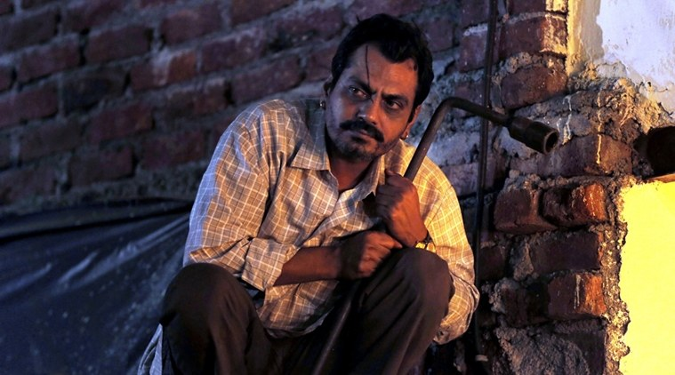

SOHAM SUHAS BANAGE.
DOB:23-08-1999.
Address: Room no.201,Shubham Niwas,kalyan-karjat road,
Badlapur(East)-421503;
Contact me.

OBJECTIVE
To obtain a challenging software developer position in a dynamic
organization where I can utilize my programming skills, problem-solving
abilities, and passion for technology to create innovative and
user-friendly software solutions that meet business needs and exceed
customer expectations." When crafting your objective statement, make sure
to tailor it to the specific software developer role you are applying for.
Highlight your relevant skills and experiences, such as programming
languages you're proficient in, software development methodologies you're
familiar with, and any experience working with specific tools or
technologies that are relevant to the job. Additionally, make sure to
express your enthusiasm for software development and your eagerness to
learn and grow within the field.
QUALIFICATION
| Degree |
College |
YOP |
Marks |
| BE(MECH) |
Bharat college of Engineering |
2021 |
63.12% |
| XII (Science) |
S.I.C.E.S jr College |
2017 |
60% |
| X |
Don Bosco English High School |
2015 |
70.22% |
SKILLS
- JAVA
- DBMS
- DSA
- HTML
- CSS
- JAVA SCRIPT
PROJECT
1.Automatic Hand Sanitizer and Mask Dispenser
This was my Final year project,Due to Recent Covid pandemic to avoid
contact we have made a dispensary system which contain both hand
sanitizer as well as mask dispenser which does not require physical
contact to operate the Machine.
2.Robotics
Racing Bot,AquaBot,SoccerBot,Sumo Bot are some of the robots made with
DC motors.I have many intercollege and intercollege events using these
robots.
EXTRACURRICULAR
1.Organize and volunteer Tech fest and sports event at Bharat college of
Engineering 2.Member of MESA (Mechanical Engineering Student
association) in 2019 at Bharat College of Engineering.
HOBBIES
Volleyball,Cricket, Watching Podcast ,Swimming.